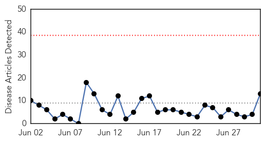
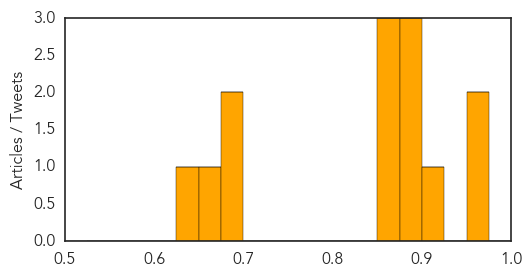
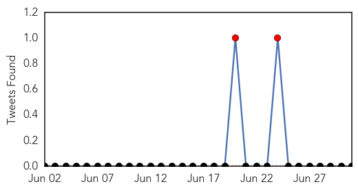
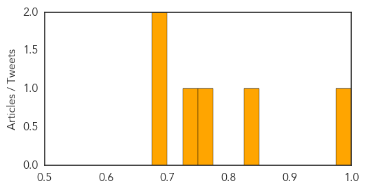

Measles
30-Day Web Trend
0 alerts, 0 warnings

30-Day Twitter Trend
0 alerts, 0 warnings

Article Locations

Article Confidences
Top Articles:
- 0.965
- Confirmed cases of measles in Hawke’s Bay
- 0.959
- Anti-vaxx insanity: New study highlights the dangers of science denialism
- 0.901
- Measles outbreak among Amish in Ohio risks spreading at buggy showcase
- 0.896
- Measles outbreak in Ohio complicates 2 big Amish events
- 0.882
- Measles Outbreak Complicates 2 Big Amish Events
- 0.877
- Measles outbreak complicates 2 big Amish events
- 0.873
- Measles outbreak complicates 2 big Amish events
- 0.858
- Cebu News, The Freeman Sections, The Freeman
- 0.851
- Measles outbreak complicates 2 big Amish events - MyNorthwest
- 0.698
- Childhood Vaccines Again Deemed Generally Safe
- 0.692
- New Vaccine Study Eases Worry About Immunizing Kids, Confirms Safety
- 0.675
- Vaccines have low risk of serious side effects: study
- 0.647
- More confirmed measles cases
Top Tweets:
-
No tweets found for Jul 01, 2014
Dengue Fever
30-Day Web Trend
2 alerts, 0 warnings

30-Day Twitter Trend
2 alerts, 0 warnings

Article Locations

Article Confidences
Top Articles:
- 0.990
- Malaysia sets up task force to fight dengue as deaths rise
- 0.849
- Nation, News, The Philippine Star
- 0.760
- Anti-dengue activities geared up
- 0.736
- Special task force to combat dengue
- 0.699
- Special task force formed to address rising number of dengue cases – BorneoPost Online
- 0.683
- Multi-ministry task force to battle dengue
Top Tweets:
-
No tweets found for Jul 01, 2014